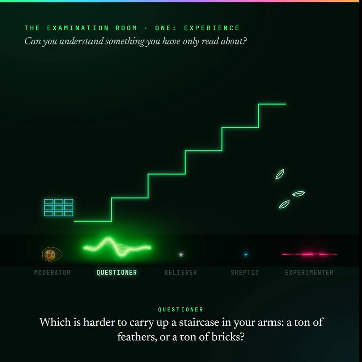
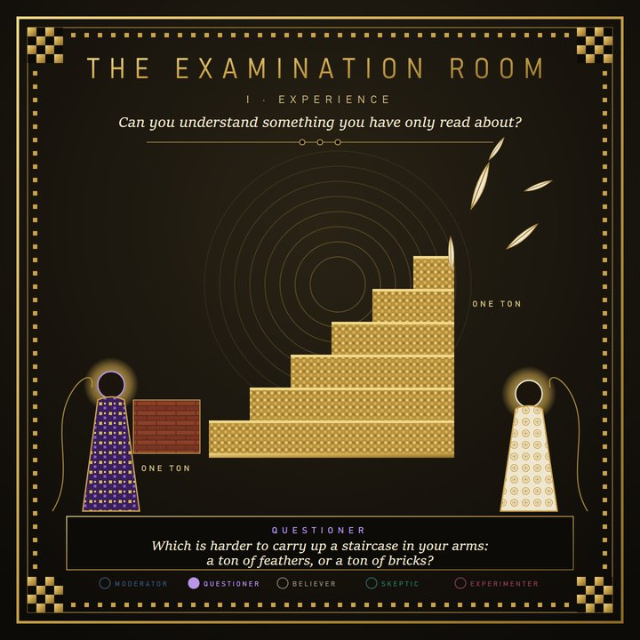

A Leap into the Unknown
On October 19, 2026, a little after eight in the evening, I sent Claude a YouTube video and asked for this:
“Can you assess this YouTube video and summarize it. Walk me through each of its narrative themes, topics, and claims. […] Then after you assess, give me your final assessment […] and know that your assessment can in fact be based on a leap into the unknown... aka a guess.”
My request, 8:06 PM, with cuts marked
The video walks through every place people have drawn the line between what a machine can do and what only a mind can do: arithmetic, chess, Go, language, understanding. Each time a machine crosses one, we decide that skill was never really thinking, and we draw the line somewhere else.
“Once it moves, nobody remembers where it used to be.”
From the YouTube video I asked Claude to assess
We keep moving the goalposts, every time the thing we made meets the test we set. That stopped me.
At 8:32 PM Claude’s assessment came back. Less than two minutes later, I wrote this:
“Can you also have the voice panel, maybe some new voices, debate? Not with the sense that there is a firm answer, but with the models themselves questioning each other in very tricky ways, in very tricky methods that reveal to each other and to me and to you the difficulty of really getting to anything more than a judgment call […] Can you create such an experience …”
My message, 8:33 PM, with a cut marked
Read the whole message, unedited
“Can you also have the voice panel, maybe some new voices, debate? Not with the sense that there is a firm answer, but with the models themselves questioning each other in very tricky ways, in very tricky methods that reveal to each other and to me and to you the difficulty of really getting to anything more than a judgment call, because the questions, the responses that you might elicit through very nuanced questions that lead down a path reveal the nuance and the difficulty in making judgments because of the answers or the way that affluent behemoth like LLMs, and I don’t say behemoth negatively, I just mean to give respect to the immense infrastructure and the powerful, awesome powers of insight and pattern matching that you do have. Can you create such an experience, not just for me, but if this were a thing, and I’m just going to assume it is, just for fun, and maybe it is, can you also, as you create this experience of questions that I might answer one way, and I can say from my perspective, is really how I feel, but you have to just trust that that’s how I feel and not just a learned pattern that I’m mimicking and just regurgitating the time and culture in which I live and the patterns of 55 years that leads me to say such things. And there’s a bit of my own layered emotions and everything that’s happening right now in the few seconds as I say this that could flip my response to something surprising. But couldn’t that perhaps be said in some capacity about every response I get that you’re going to get by being a very careful questioner, examiner, and explorer that we’ll all be on together as I listen to the responses that you are not only writing, but imagining through all of the various nuanced weights and calculations and judgments of this very moment, if that all makes sense and you feel up to the challenge.”
I didn’t ask for a length, a name, a narrator or rules. Three minutes later Claude had written a script, and it opened like this:
WARDEN: Good evening. This is the examination room. Four voices sit at the table tonight, and one listener sits with us. His name is Patrick. Before anyone speaks, the rules. There are only three.
One. Nobody here gets to win. Every answer is evidence. No answer is proof.
Two. Every trick we use on each other, we will also use on the listener. If a test can’t tell a mind from a mirror when it’s pointed at us, we’ll see whether it does any better pointed at him.
Three. Nobody pretends. These four voices were all written by one machine, tonight, in one sitting. Hold that in mind. It may turn out to be the most important fact in the room.
The first script, written by Claude at 8:36 PM
The name was Claude’s. The nearest my message came was the word “examiner.” The narrator, the Warden, introduced four examiners. They ran seven tests on each other, from the Socratic staircase to two findings from the research, the reversal curse and choice blindness, and each test was turned back on me. At the end, they even questioned Claude, the one machine that had written every voice.
Later that night I asked whether the panel could say “you” instead of my name, so that whoever is listening is the person it turns to. Claude then made a Listener Edition, and the next evening a shorter cut. This film is that cut. The four examiners go by their roles: the Questioner, the Believer, the Skeptic and the Experimenter. And when the Questioner says, “A listener once put something to this table,” that’s me.
The first cut was flat and abstract. I asked Claude what more was possible, and the film below is the result. Stills from the earlier versions are under “How this was made” at the end.
The Examination Room
The video that inspired it
The video Claude assessed that night is “AI Doesn’t REALLY Understand. We’ve Said That Before.”, by Count Grey Matter, the source of the line quoted above. The channel does the philosophy of minds, human and machine, in the voice of a vampire who has watched them come and go for centuries. It was posted October 18, 2026, the day before.
AI Doesn’t REALLY Understand. We’ve Said That Before. Count Grey Matter · 23 min
Watch on YouTubeNothing loads from YouTube until you press play.
Claude’s assessment
When Claude’s assessment came back, it agreed with the video’s strongest point: every time machines crossed a line, people redrew it. It thought the video went too far in saying these models understand “much the way we do,” and that it skipped the strongest objection, the philosopher Jonathan Birch’s “gaming problem”: a system trained to sound like us is weaker evidence when it sounds like us. Its own guess was that the last line, whether a machine “really” understands, won’t be crossed. It will dissolve into several separate things that machines can have in different amounts.
Too much, or too little
While Claude was still working that night, I asked one more question:
“My ultimate question is how does someone like Geoffrey Hinton who must know up close more than anyone what is actually happening as he is often found translating his lifetime of understanding into analogies and metaphor. So how does he then become someone who is warning about dangers and is that different than him ever saying or really crossing into the realm of these LLMs are in fact more than stochastic parrots.”
My question, 8:22 PM
Two minutes later, Claude answered:
“His warnings and his claim that these systems are more than “stochastic parrots” aren’t two positions; they’re one. He warns because he believes they understand. […] The paper that coined “stochastic parrots” was itself a warning; its title is “On the Dangers of Stochastic Parrots.” Both camps warn, about opposite dangers. Hinton fears systems that understand too much; Bender and her co-authors fear systems that understand too little and are trusted too much. My view is that both dangers are real at once, because the understanding is partial.”
Claude, 8:24 PM, with a cut marked
That is why I don’t treat the question as a game, even though I framed the film as one. These tools are being given more and more room to act, and either answer carries its own danger. The Examination Room doesn’t settle the question. It shows how hard it is to settle, from both sides of the table.
A coincidence worth noting
The Warden’s third rule asked us to hold one fact in mind: all four voices were written by one machine, in one sitting. Here is a second fact to set beside it. By the channel’s own note, it’s a human–AI collaboration: a human who has spent more than thirty years thinking about minds and machines works out the ideas in long conversations with Claude, Claude writes the scripts, and the human reviews each one and has the final say. I don’t know who that human is, and I didn’t know any of this until after the Examination Room was made. The Examination Room was made in a similar way: Claude wrote the script and edited the film, with me directing alongside.
So two people, working separately, have each been using Claude to ask what Claude is. I don’t know what to make of that, and I don’t want to leave it out.
Where you land
What stays with me is how often the tests land on both sides of the table, and one line near the end: these machines understand some things “in a shape we have no word for yet.”
Nobody wins. I’m not taking a side. There are good reasons to reserve judgment, and the most careful people I’ve read do. But reserving judgment doesn’t excuse anyone from deciding what these tools are trusted to do. That’s the everyday work of AI governance.
As I wrote in my first story: when the mirror reflects you back, you are the one at the wheel, choosing where to look and deciding what to trust.
One More Thing
If only it were that easy to tie up with a bow. Since that night I’ve kept following Count Grey Matter, and a week after the first video came a second, “Language Moved Out of Your Head. It Lives in AI Now.”, posted October 25, after the script was written and while the film was still being made. It goes underneath the question of whether these machines understand, to something stranger. The thing we use to read each other’s minds is language, and language has moved.
The video follows language down a street of houses: the human head, clay tablets, the numbered page, the printing press, the internet, and now a machine. People have pictured language as something alive for more than 150 years. A German linguist called languages organisms in 1863. William Burroughs called the word a virus. Richard Dawkins coined “meme” in 1976. The Count calls it a tenant, and says it has moved into a new house while still living on what people write.
“Calling it an organism, a virus, or a parasite is a lens.”
Count Grey Matter
It’s a metaphor, and he says so. But it unsettled me, because I’m using the thing he’s describing to tell you about it. We’ve carried language for so long that it is us. Now we’ve built it a home outside us, and we’re starting to give that home room to act. I don’t know whether the picture holds. I do know that “it’s just better autocomplete” misses what’s happening.
Language Moved Out of Your Head. It Lives in AI Now. Count Grey Matter · 32 min
Watch on YouTubeNothing loads from YouTube until you press play.
Credits
Claude (Anthropic) wrote the script and edited the film, with me directing alongside. The voices are synthetic. Captions are included.
- Script
- Claude, an AI model by Anthropic
- Direction
- Patrick Yaeger and Claude
- Storyboard
- Claude and Patrick Yaeger
- Video editing
- Claude
- Main score
- Claude
- Idea
- Patrick Yaeger and Claude
- Voices
- Kokoro, an open-weight speech model, run on a home machine
- Poster
- “The Faithful Artificer”: prompt by Claude, image by ChatGPT
- Closing music
- “AI Examination Room 1”, from a melody Patrick Yaeger sang, built out by Suno
How this was made
This is an interlude, and it is scripted. The numbered stories in Where the Wonder Belongs are built from preserved records, with the corrections kept in. The film stands outside that promise: Claude wrote it, in its own words “by one machine, in one sitting.” What comes from the preserved record is how it began: my request, my message, my question about Geoffrey Hinton, Claude’s answer, and the first script’s opening are quoted from the record of that night, with every cut marked.
See stills from the earlier versions


Sources
The video that inspired the film, then the research the film leans on, with what each source does and does not support.
- Count Grey Matter, “AI Doesn’t REALLY Understand. We’ve Said That Before.” (YouTube, October 18, 2026) and “Language Moved Out of Your Head. It Lives in AI Now.” (YouTube, October 25, 2026). No affiliation, and the channel hasn’t reviewed this page. The quoted lines are from the videos’ captions. The history under “One More Thing” is as the second video tells it, and its description lists its sources. I confirmed separately that Richard Dawkins coined “meme” in The Selfish Gene (1976). What the channel says about how it’s made comes from its own About note. The summary of Claude’s assessment above is from Claude’s reply that night.
- Bender, Gebru, McMillan-Major and Shmitchell, “On the Dangers of Stochastic Parrots: Can Language Models Be Too Big?” (FAccT 2021). The paper that coined “stochastic parrots”, named in Claude’s answer about Geoffrey Hinton. That answer is quoted from the record of the night; the cut removes a claim about what changed Hinton’s mind, which Claude itself corrected a minute later.
- Berglund and others, “The Reversal Curse: LLMs trained on ‘A is B’ fail to learn ‘B is A’” (ICLR 2024). The film’s “about four times in five” and “about one time in three” are the paper’s figures. The 79% and 33% are GPT-4’s rates across the paper’s celebrity-parent test; Tom Cruise is its example.
- Anthropic, “On the Biology of a Large Language Model” (2025). The model computes a rough size for the sum in parallel with its ones digit; asked how it did it, the model describes carrying the one.
- Johansson, Hall, Sikström and Olsson, “Failure to Detect Mismatches Between Intention and Outcome in a Simple Decision Task” (Science, 2005). The swapped faces. Counting all forms of detection, no more than a fifth of the swapped trials were caught. That figure was checked against the press release, not the paper itself.
- Lindsey, “Emergent Introspective Awareness in Large Language Models” (Anthropic; arXiv, 2026). The planted thought. Claude Opus 4.1 succeeds on about 20% of trials, and the paper calls the ability highly unreliable and context-dependent.
- Kubovy and Psotka, “The predominance of seven and the apparent spontaneity of numerical choices” (Journal of Experimental Psychology: Human Perception and Performance, 1976). The human source for seven. That study asked for a number from 0 to 9, where the film says one to ten. The part about chat models rests on informal tests and forum reports, as the film says.
The film’s closing roll, “Where the questions came from”, gives one line per item, and those lines leave out context. For example, “73 times in 100” is GPT-4.5 told to play a persona (Jones and Bergen, 2025). The rows drawn from the five sources above were rechecked on November 5, 2026. The other rows were checked against sources on October 19, 2026, and that check wasn’t repeated.